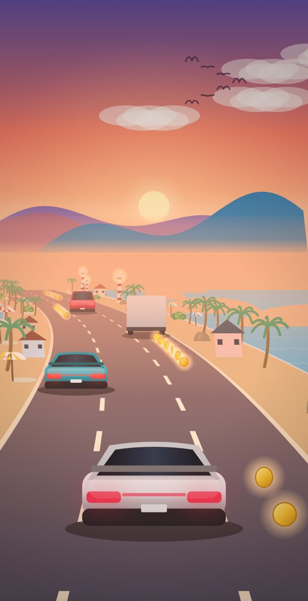

Drawer, living world and sound (mock)
Mocks only. The beach frame and coins come from a scratch copy of the game, so they show real drawing. Sound previews are separate audio files.
1. The drawer (menu) in the launcher, and the pause sheet in the game
11:095G 87%
Classic Games
Pick up where you left off.

CONTINUE · RACERChapter 2: Sunset Coast
SnakeBest 31 · 12 mazes
Daily roadSame road for everyone
Classic Games
Saved on this phone
Best scoresPer game and mode
Launcher drawerSlides in from the left. App-wide things only: awards, scores, appearance, sound, help. Game settings live inside each game.
11:095G 87%
Paused
Camera: Chase
Speed: Relaxed
In-game pause sheetA bottom sheet within thumb reach. It never covers the HUD in a way that hides what happened. Photo mode freezes the scene for a screenshot.
CoinsLines and arcs of coins to steer through. Each pickup plays a note of the current chord, so collecting a line plays a little tune.
My review of the earlier mock (honest)
- Too much on screen at once: distance, hearts, trip bar, title and speed all compete. Show the chapter title for 3 seconds only, and the trip bar only when it changes.
- Cars are the loudest thing: they are brighter than the scenery. Slightly desaturate traffic far away so the landscape reads first.
- The player's car never changes: add colours, a headlight glow and tyre dust.
- Scenery repeats: the same palm or house at the same spacing reads as a pattern. Use randomised spacing and size, and unique set pieces.
- Static between events: life needs to happen every 5 to 10 seconds, not just chapter changes.
- Hard difficulty ramps: the player should feel mastery, not punishment.
2. A more alive world: the beach, waves and set pieces

SCRATCH BUILD
Sunset CoastSea on both sides with moving wave lines, foam at the shore, sun glitter, umbrellas, palms, a lighthouse and a sailboat. Sound: waves and gulls.
Amber ValleySoft haze with no hard line, windmills turning, smoke from cottages, leaves in the wind.
What can make the world feel less static
- Things that move on their own: waves, boats, a train on a bridge, a plane, hot air balloons (several, different colours), birds, butterflies by day, fireflies at dusk, flags, clothes lines, windmills, a ferris wheel.
- Light that changes: the sun slowly crosses the sky across chapters, long shadows at golden hour, sun glare and god rays, lights switching on at dusk, lightning in storms, aurora at night.
- Weather you can feel: wind that bends the trees harder when it gusts, rain on the road with ripples, mist in valleys, snow settling on the sides.
- 3D feel: big near objects that slide past quickly (poles, signs, bridges you drive under), soft shadows under everything, layered hills with haze, a slight camera roll in curves, a gentle FOV widening at speed.
- Set pieces: a bridge, a tunnel with echo, a village square, a harbour, a mountain pass, a canyon, a cliff-top lighthouse.
- Limit: blur effects look great on some phones but are not supported everywhere (some iPhones), so I would fake depth with haze and layers.
3. Pickups (and the sound each one makes)
CoinPoints. Plays one note of the chord, so lines make a tune.
GemRare, big bonus. A bright bell with a long tail.
Heart+1 life. Two soft bell notes rising.
ShieldOne free bump. A warm rising shimmer.
BoostA few seconds of speed. Bass swell and wind.
4. How the sound is built and mixed (atmospheric mixing)
Music (changes per chapter)
Sub bassalways
String padalways
Pulse (ostinato)from the 2nd minute
Hornson climbs
Taikoon chapter change
Piano or handpanmelody
Ambience (the place)
Waves and gullscoast
Wind in grassmeadow
City hum, distant hornscity
Rain on roadstorm
Cricketsdusk
Tunnel echotunnel
Car
Enginepitch with speed
Tyreslouder in curves
Windwith speed
Pass-by whooshwhen a car goes by
Events
Coinchord note
Near misswhoosh + bass
Lane changesoft swish
Bumpthud, shield
Heart, chapterbells
Crash
Low boom
Noise burst
Glass chimes
Music ducks and darkens
Reverb space. Music and ambience share a large soft room, so everything feels in one place. Effects get a smaller share, so they stay clear.
Ducking. A coin, a near miss or a crash briefly lowers the music and ambience, then lets it return. Sounds then sit in the mix instead of piling up.
Dynamics. A compressor keeps the loud parts from jumping out, and a limiter protects speakers. Calm mode lowers peaks, narrows the bass and removes sudden hits.
1 Dawn MeadowD major, 76 bpm. Piano and soft pad, wind in the grass
2 Sunset CoastG, 88 bpm. Handpan, shaker, waves
3 Amber ValleyE minor, 72 bpm. Piano and cello, leaves
4 Dusk CityA minor, 90 bpm. Warm synth pad, city hum
5 Neon QuarterF minor, 100 bpm. Pulse and sub, rain
6 Desert RoadB minor, 80 bpm. Plucked strings, wind
7 Northern LightsC, 60 bpm. Slow pads and bells, night